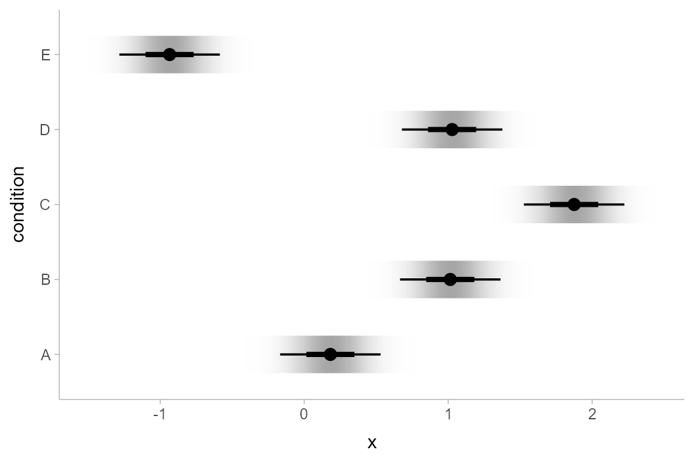
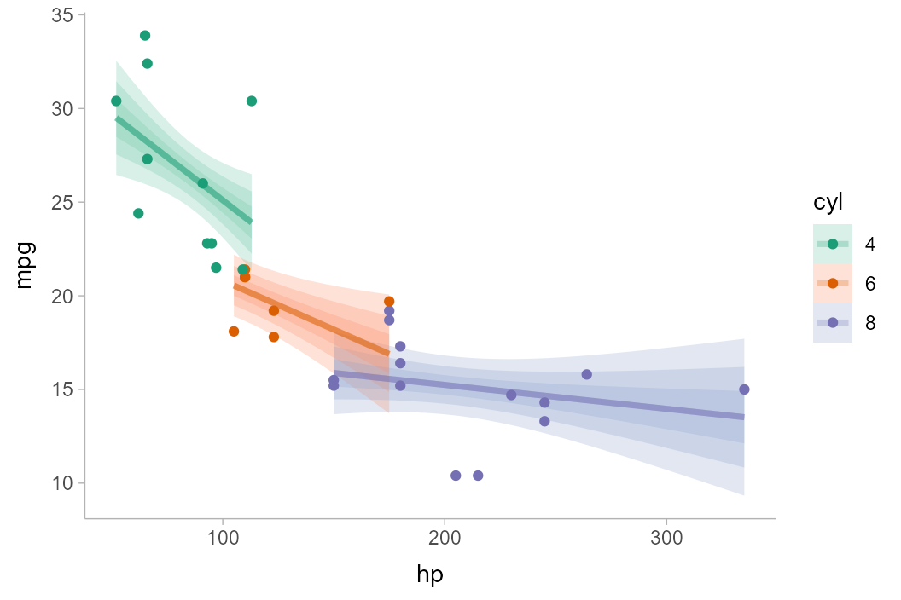
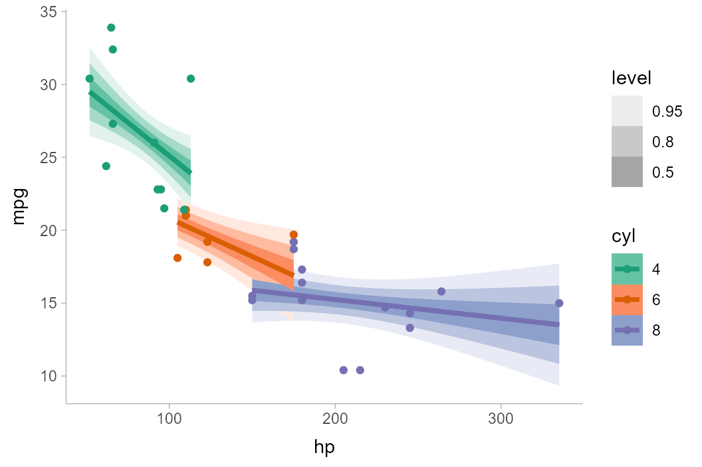

Frequentist uncertainty visualization
Matthew Kay
2023-05-13
Source:vignettes/freq-uncertainty-vis.Rmd
freq-uncertainty-vis.RmdIntroduction
This vignette shows how to combine the ggdist geoms with
output from the broom package to enable visualization of
uncertainty from frequentist models. The general idea is to use
xdist and ydist aesthetics supported by
ggdist stats to visualize confidence distributions
instead of visualizing posterior distributions as we might from a
Bayesian model. For more information on the families of geoms and stats
in ggdist, see vignette("slabinterval"),
vignette("dotsinterval"), and
vignette("lineribbon").
Confidence distributions are a way of unifying the notion of sampling distributions, bootstrap distributions, and several other concepts in frequentist inference. They are a convenient tool for visualizing uncertainty in a way that generalizes across Bayesian and frequentist frameworks: where in a Bayesian framework we might visualize a probability distribution, in the frequentist framework we visualize a confidence distribution. This gives us a way to use the same geometries for uncertainty visualization in either framework.
For more on confidence distributions, see: Xie, Min‐ge, and Kesar Singh. Confidence distribution, the frequentist distribution estimator of a parameter: A review. International Statistical Review 81.1 (2013): 3-39.
Point estimates
We’ll start with an ordinary least squares (OLS) linear regression analysis of this simple dataset:
set.seed(5)
n = 10
n_condition = 5
ABC =
tibble(
condition = rep(c("A","B","C","D","E"), n),
response = rnorm(n * 5, c(0,1,2,1,-1), 0.5)
)This is a typical tidy format data frame: one observation per row. Graphically:
ABC %>%
ggplot(aes(x = response, y = condition)) +
geom_point(alpha = 0.5) +
ylab("condition")
And a simple linear regression of the data is fit as follows:
m_ABC = lm(response ~ condition, data = ABC)The default summary is not great from an uncertainty communication perspective:
summary(m_ABC)##
## Call:
## lm(formula = response ~ condition, data = ABC)
##
## Residuals:
## Min 1Q Median 3Q Max
## -0.9666 -0.4084 -0.1053 0.4104 1.2331
##
## Coefficients:
## Estimate Std. Error t value Pr(>|t|)
## (Intercept) 0.1816 0.1732 1.048 0.30015
## conditionB 0.8326 0.2450 3.399 0.00143 **
## conditionC 1.6930 0.2450 6.910 1.38e-08 ***
## conditionD 0.8456 0.2450 3.452 0.00122 **
## conditionE -1.1168 0.2450 -4.559 3.94e-05 ***
## ---
## Signif. codes: 0 '***' 0.001 '**' 0.01 '*' 0.05 '.' 0.1 ' ' 1
##
## Residual standard error: 0.5478 on 45 degrees of freedom
## Multiple R-squared: 0.7694, Adjusted R-squared: 0.7489
## F-statistic: 37.53 on 4 and 45 DF, p-value: 8.472e-14So let’s try half-eye plots instead. The basic idea is that we need
to get the three parameters for the sampling distribution of each
parameter and then use stat_halfeye() to plot them. The
confidence distribution for parameter \(i\), \(\tilde\beta_i\), from an lm
model is a scaled-and-shifted t distribution:
\[ \tilde\beta_i \sim \textrm{student_t}\left(\nu, \hat\beta_i, \sigma_{\hat\beta_i}\right) \]
With:
-
\(\nu\): degrees of
freedom, equal to
df.residual(m_ABC) -
\(\hat\beta_i\): location,
equal to the point estimate of the parameter (
estimatecolumn frombroom::tidy()) -
\(\sigma_{\hat\beta_i}\):
scale, equal to the standard error of the parameter estimate
(
std.errorcolumn frombroom::tidy())
We can get the estimates and standard errors easily by using
broom::tidy():
tidy(m_ABC)## # A tibble: 5 × 5
## term estimate std.error statistic p.value
## <chr> <dbl> <dbl> <dbl> <dbl>
## 1 (Intercept) 0.182 0.173 1.05 0.300
## 2 conditionB 0.833 0.245 3.40 0.00143
## 3 conditionC 1.69 0.245 6.91 0.0000000138
## 4 conditionD 0.846 0.245 3.45 0.00122
## 5 conditionE -1.12 0.245 -4.56 0.0000394Finally, we can construct vectors of probability distributions using
functions like distributional::dist_student_t() from the distributional
package. The stat_slabinterval() family of functions
supports these objects.
Putting everything together, we have:
m_ABC %>%
tidy() %>%
ggplot(aes(y = term)) +
stat_halfeye(
aes(xdist = dist_student_t(df = df.residual(m_ABC), mu = estimate, sigma = std.error))
)
If we would rather see uncertainty in conditional means, we can
instead use modelr::data_grid() along with
broom::augment() (similar to how we can use
modelr::data_grid() with
tidybayes::add_fitted_draws() for Bayesian models). Here we
want the confidence distribution for the mean in condition \(c\), \(\tilde\mu_c\):
\[ \tilde\mu_c \sim \textrm{student_t}\left(\nu, \hat\mu_c, \sigma_{\hat\mu_c} \right) \]
With:
-
\(\nu\): degrees of
freedom, equal to
df.residual(m_ABC) -
\(\hat\mu_c\): location,
equal to the point estimate of the mean in condition \(c\) (
.fittedcolumn frombroom::augment()) -
\(\sigma_{\hat\mu_c}\):
scale, equal to the standard error of the mean in condition
\(c\) (
.se.fitcolumn frombroom::augment(..., se_fit = TRUE))
Putting everything together, we have:
ABC %>%
data_grid(condition) %>%
augment(m_ABC, newdata = ., se_fit = TRUE) %>%
ggplot(aes(y = condition)) +
stat_halfeye(
aes(xdist = dist_student_t(df = df.residual(m_ABC), mu = .fitted, sigma = .se.fit)),
scale = .5
) +
# we'll add the data back in too (scale = .5 above adjusts the halfeye height so
# that the data fit in as well)
geom_point(aes(x = response), data = ABC, pch = "|", size = 2, position = position_nudge(y = -.15))
Of course, this works with the entire
stat_slabinterval() family. Here are gradient plots
instead:
ABC %>%
data_grid(condition) %>%
augment(m_ABC, newdata = ., se_fit = TRUE) %>%
ggplot(aes(y = condition)) +
stat_gradientinterval(
aes(xdist = dist_student_t(df = df.residual(m_ABC), mu = .fitted, sigma = .se.fit)),
scale = .5, fill_type = "gradient"
)
Note: The example above uses the
experimental fill_type = "gradient"
option. This can be omitted if your system does not support it; see
further discussion in the section on gradient plots in
vignette("slabinterval").
Or complementary cumulative distribution function (CCDF) bar plots:
ABC %>%
data_grid(condition) %>%
augment(m_ABC, newdata = ., se_fit = TRUE) %>%
ggplot(aes(y = condition)) +
stat_ccdfinterval(
aes(xdist = dist_student_t(df = df.residual(m_ABC), mu = .fitted, sigma = .se.fit))
)
We can also create quantile dotplots by using the dots
family of geoms. Quantile dotplots show quantiles from a distribution
(in this case, the sampling distribution), employing a frequency
framing approach to uncertainty communication that can be easier
for people to interpret (Kay et al. 2016, Fernandes et
al. 2018):
ABC %>%
data_grid(condition) %>%
augment(m_ABC, newdata = ., se_fit = TRUE) %>%
ggplot(aes(y = condition)) +
stat_dots(
aes(xdist = dist_student_t(df = df.residual(m_ABC), mu = .fitted, sigma = .se.fit)),
quantiles = 100
)
See vignette("slabinterval") and
vignette("dotsinterval") for more examples of uncertainty
geoms and stats in the slabinterval family.
For a fit line
The same principle of reconstructing the confidence distribution
allows us to use stat_lineribbon() to construct uncertainty
bands around regression fit lines. Here we’ll reconstruct an example
with the mtcars dataset from
vignette("tidy-brms", package = "tidybayes"), but using
lm() instead:
m_mpg = lm(mpg ~ hp * cyl, data = mtcars)Again we’ll use modelr::data_grid() with
broom::tidy(), but now we’ll employ
stat_lineribbon():
mtcars %>%
group_by(cyl) %>%
data_grid(hp = seq_range(hp, n = 101)) %>%
augment(m_mpg, newdata = ., se_fit = TRUE) %>%
ggplot(aes(x = hp, fill = ordered(cyl), color = ordered(cyl))) +
stat_lineribbon(
aes(ydist = dist_student_t(df = df.residual(m_mpg), mu = .fitted, sigma = .se.fit)),
alpha = 1/4
) +
geom_point(aes(y = mpg), data = mtcars) +
scale_fill_brewer(palette = "Set2") +
scale_color_brewer(palette = "Dark2") +
labs(
color = "cyl",
fill = "cyl",
y = "mpg"
)
Another alternative to using alpha to create gradations
of lineribbon colors in different groups is to use the
fill_ramp aesthetic provided by ggdist to
“ramp” the fill color of the ribbons from "white" to their
full color (see help("scale_fill_ramp")). Here we’ll
“whiten” the fill color of each band according to its level
(the level variable is computed by
stat_lineribbon() and is an ordered factor version of
.width):
mtcars %>%
group_by(cyl) %>%
data_grid(hp = seq_range(hp, n = 101)) %>%
augment(m_mpg, newdata = ., se_fit = TRUE) %>%
ggplot(aes(x = hp, color = ordered(cyl))) +
stat_lineribbon(aes(
ydist = dist_student_t(df = df.residual(m_mpg), mu = .fitted, sigma = .se.fit),
fill = ordered(cyl),
fill_ramp = after_stat(level)
)) +
geom_point(aes(y = mpg), data = mtcars) +
scale_fill_brewer(palette = "Set2") +
scale_color_brewer(palette = "Dark2") +
labs(
color = "cyl",
fill = "cyl",
y = "mpg"
)
One way to avoid problems created by overlapping ribbons (besides
using alpha, as above) is to use commutative blending modes
available in R > 4.2. The ggblend package enables
support for such blending modes, and its documentation includes examples
of their use with stat_lineribbon().
For more examples of using lineribbons, see
vignette("lineribbon").